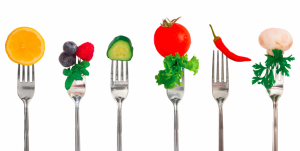

Правильне харчування допомагає людині зберігати працездатність, уникати різних захворювань, підтримувати нормальну вагу, збільшити тривалість життя. На здорове харчування потрібно переходити поступово, щоб це не було стресом для організму. В будь-якому віці не пізно перейти на правильне здорове харчування.
Щоб організм отримував всі необхідні поживні речовини і повністю їх засвоював ТРЕБА ЗНАТИ основні правила здорового харчування і принципи правильного харчування.
Пропонуємо 17 правил і принципів здорового харчування на кожен день:
1-ше Правило здорового харчування -
Різноманітне повноцінне харчування:
Правильне харчування повинно бути не тільки помірним і регулярним, але і різноманітним, тобто охоплювати всі ті продукти рослинного і тваринного походження, які містять незамінні сполуки (ті що не утворюються в тілі людини самостійно).
2-ге Правило -
Калорійність добового раціону:
Калорійність раціону повинна бути прив‘язана до енерговитрат, тобто покривати мінімум необхідного (основний обмін) та робочу надбавку (залежить від виду діяльності). З віком калорійність добового раціону повинна знижуватися в основному за рахунок тваринних жирів і вуглеводів (хліб, картопля, цукор). Кількість білків повинна залишатися незмінною.
3-тє Правило -
Харчування 5 разів у день
Нерегулярний прийом їжі призводить до порушення травлення. Найбільш раціональним є 5-разове харчування, приблизно в один і той же час. Тоді людина не переїдає, а травна система працює в звичному для неї періодичному режимі.
4-те Правило здорового харчування -
Повільна їжа:
Якщо ви перевтомилися, не приступайте відразу до їжі, відпочиньте трохи. Під час їжі потрібно відволіктися від думок про роботу, про справи, не слід вести серйозних розмов, читати або дивитися телевізор. Їсти треба повільно.
5-те Правило -
Довге пережовування:
Приймайте їжу в певний час, не на ходу. Як жувати їжу? Рекомендується робити більше 20 жувальних рухів, перш ніж, їжа, взята в рот, буде проковтнута. Спробуйте для інтересу підрахувати, скільки ви робите жувальних рухів, перш ніж проковтнути їжу. І ви переконаєтеся, що поспішаючи, зіпсуєте собі шлунок, а з ним і здоров'я.
6-те Правило -
Необхідно відмовитися від їжі всухом'ятку:
Рідкі страви, приготовані на м'ясних, рибних, овочевих і грибних відварах, сприяють виділенню шлункового соку. Першу страву можна супроводжувати основною з м'яса, риби, круп, картоплі та ін. Солодке їдять у кінці обіду, тоді вплив шлунково-кишкових гормонів, які виділяються після вживання цукру і сповільнюють травлення буде менш відчутний.
7-ме Правило здорового харчування -
Овочі і фрукти:
Їжте більше свіжих овочів і фруктів. Вони містять необхідні організму вітаміни, мінеральні солі, органічні кислоти, клітковину та інші корисні речовини. Покращують травлення, нормалізують обмін речовин.
8-ме Правило -
Питний режим:
Витримуйте питний режим. Пийте не менше 1,5-2,0л води в добу. Більш корисна некип‘ячена вода, очищена за допомогою фільтра або мінеральна столова. У спеку, при інтенсивній фізичній роботі та після вживання багатої на білки їжі води треба пити більше.
9-те Правило -
Білкова їжа на сніданок і обід:
За сніданком і обідом необхідно вживати білкову їжу: м'ясо, рибу, яйця, каші, овочі, сир. Каші краще готувати на воді - вони більш корисні.
10-те Правило -
На вечерею - молочні, круп'яні, овочеві страви:
Вечеряти не пізніше ніж за 2 години до сну.
11-те Правило -
Кисломолочні продукти:
Вживайте нежирні кисломолочні продукти. Кефір містить тваринний білок, який не менш цінний білків м'яса і риби, і легкий в засвоєнні.
12-те Правило -
Їсти свіжоприготовану їжу:
Їжа, яка кілька днів простояла в холодильнику втрачає багато корисних властивостей. Фастфуд небезпечний великою кількістю пережарених олій, що місять канцерогени.
13-те Правило -
Розвантажувальний день:
1 день в тиждень робіть розвантажувальним. Якщо це важко, то хоча б 1 або 2 дні в місяць. У розвантажувальні дні нормалізується робота травної системи.
Замінюючи висококалорійні продукти на меншкалорійні, ми можемо регулювати свою вагу впродовж тривалого часу, а допоможе в цьому наша Таблиця калорійності продуктів.
14-те Правило -
Приймайте вітаміни:
Для правильного харчування потрібними є вітамінні комплекси, особливо взимку-ранньою весною та при хронічних захворюваннях травної системи, коли з їжі організм не отримує достатню кількість вітамінів і мікроелементів.
15-те Правило -
Їжте тільки коли зголодніли:
Прислухайтеся до свого організму і не їжте, якщо ви не голодні. Це важливе правило для підтримки нормальної ваги.
16-те Правило -
Харчування після 40 років:
Після 40 років дуже важливо дотримуватися правильного харчування. Потрібно вживати більше знежирених кисломолочних продуктів. Вони покращують роботу кишечника і доставляють в організм кальцій, калій, фосфор і інші мінеральні речовини. В раціоні повинна бути достатня кількість овочів та фруктів. Слід особливо контролювати споживання цукру.
17-те Правило здорового харчування -
Харчування після 50 років:
Після 50 років організм гостро реагує на порушення водно-сольового обміну. Тому, не слід обмежувати вживання рідини. А ось вживання кухонної солі необхідно знизити.
Правила здорового харчування дотримуватися не так вже й складно, як здається. Просто треба усвідомити, що правильне харчування має стати частиною здорового способу життя, доброю звичкою, а не тимчасовою дієтою.